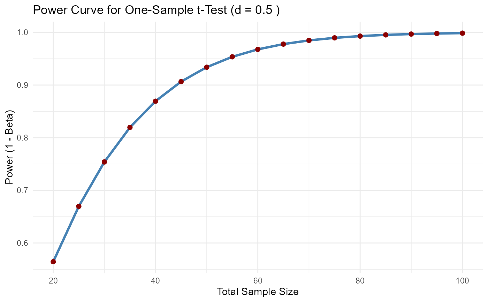

This function creates a ggplot2 power curve for a one-sample t test.
Usage
ggpower_t_one_sample(d, alpha = 0.05, n_range = seq(20, 100, by = 5),
tails = "two")Examples
# Plot power curve for d = 0.5 over sample sizes from 20 to 100
ggpower_t_one_sample(d = 0.5, alpha = 0.05, n_range = seq(20, 100, by = 5))
